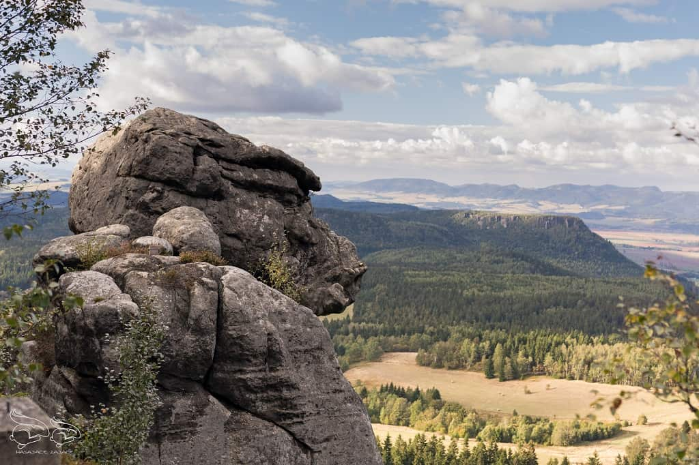

Galeria Gór Stołowych

Ciekawostki
- Szczeliniec Wielki to najwyższy szczyt Gór Stołowych – 919 m n.p.m.
- Błędne Skały to jeden z najpopularniejszych labiryntów skalnych w Polsce.
- Park Narodowy Gór Stołowych został założony w 1993 roku.
- Góry Stołowe to jedno z nielicznych pasm górskich w Europie o charakterze płytowym – mają specyficzne płaskie szczyty.
- W Górach Stołowych kręcono sceny do filmów, takich jak "Opowieści z Narnii" oraz "Testosteron".
- Labirynty skalne w Górach Stołowych, takie jak Błędne Skały, powstawały przez miliony lat w wyniku erozji.
- Na Szczelińcu Wielkim znajduje się schronisko PTTK im. Franciszka Pabla – jedno z najstarszych schronisk górskich w Polsce.
- W Górach Stołowych znajduje się słynny Diabelski Stół – charakterystyczna formacja skalna przypominająca stół.
- Góry Stołowe były inspiracją dla wielu artystów, w tym malarzy i pisarzy, którzy doceniali ich unikalne krajobrazy.
- W okresie zimowym, Góry Stołowe stają się popularnym miejscem do uprawiania narciarstwa biegowego i zimowych wędrówek.